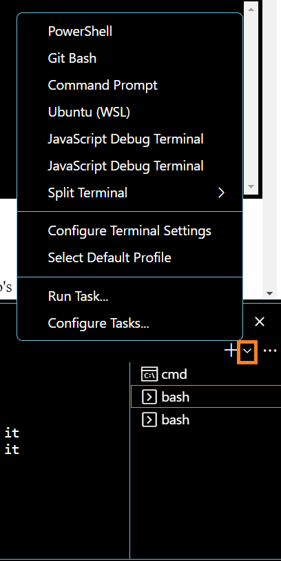

HTML, CSS and Event Tutorial
ITCS 3120 Computer Graphics
Spring 2023
Professor Zachary Wartell
Due Date: See Canvas
Assignment
Revised:Wed Feb 15 14:43:00 2023 -0500(git-log)
Copyright September 2018, Zachary Wartell @ University of North Carolina at Charlotte
All Rights Reserved.
Learning Objectives
- Install and setup various course tools and libraries and WebGL examples
- Learn to use Visual Studio Code IDE's web server for displaying WebGL examples used in the course.
- Learn basics coding and editing with Visual Studio Code IDE (or demonstrate prior knowledge)
- Learn very basics of HTML5 (or demonstrate prior knowledge)
- Learn very basics of CSS (or demonstrate prior knowledge)
- Learn very basics of JavaScript event handling (or demonstrate prior knowledge)
Overview
This course focuses on 2D/3D computer graphics and programming with WebGL. WebGL runs in the context of a HTML5 web browser environment with JavaScript. This tutorial selects a subset of several on-line resources to cover the minimal amount of HTML5, CSS and event handling required to get the most out of the book, WebGL Programming Guide, that will be used in this class.
Tutorial Structure
This tutorial has 3 parts. The parts are very different in size and complexity and contain alternative options for students with prior knowledge of some of the Learning Objectives.
- Part 1 is required.
- Part 2: Either Option I or Option II is required.
- Option I - Visual Studio Code: Tutorial: Option I is for students without extensive experience using a debugger in an integrated development environment that supports HTML5 (HTML+JavaScript) and which supports debugging HTML5 projects when it is running in the Chrome browser. Option I is a tutorial on the Visual Studio Code (VS Code) IDE including: using it's basic code editing functionality, using it's debugging features and and configuring it for this course's HTML5+WebGL projects.
- Option II - Using another IDE
Option II is for those who have extensive experience using an IDE and it's debugger, and who are capable of configuring their preferred IDE to run and debug HTML5 projects (HTML+JavaScript+WebGL) including a configuration where the code is running in the Chrome browser.The TA will grade all projects as they run in Chrome.
- Part 3: Either Option I or Option II is required
- Option I - HTML, CSS and Event Handling: This option is for students without experience programming in HTML5, CSS and a good understanding of event handling in HTML+JavaScript projects.
- Option II - Prior Experience in HTML, CSS and Event Handling
This option is for students who already have the experience described above.
Part 1: Directory and cci-git GitLab Tools Setup
Each student must complete all of Part 1.
- Installing WebGL Programming Guide Examples
- VSCode - Install Watch and follow the instructions at: https://code.visualstudio.com/docs/introvideos/basics to installed Visual Studio Code. (It should only take 5-10 minutes).
- NodeJS - Install Install https://nodejs.org/en.
- Live Preview Extension Install the following extensions (or the lastest version of it) following the instructions about VS Code's
extensions marketplace
Live Preview v0.4.9 Microsoft microsoft.com 2,779,724 (57) Hosts a local server in your workspace for you to preview your webpages on.
- Clone the WebGL Programming Guide Examples
In your ITCS_3120 directory, clone the WebGL Programming Guide
example code:
lucretius@Monad42 ~/ITCS_/
git clone https://cci-git.charlotte.edu/UNCC_Graphics_Third_Party_Libraries/WebGL_Programming_Guide.git
- Explore the WebGL Examples in VS Code
In VS Code, from the main menu select items File
-> Open Folder and select the above folder, i.e. ~/ITCS_3120/WebGL_Programming_Guide. These code files will
appear listed in the VS Code Explorer
panel, on the left side. In the Explorer panel, right-click the
file index.html. In the
pop-up menu, select Show Preview (or Show Live Server).
A browser will be started displaying index.html.
Select some of links on the displayed page and run some of the examples. The video below illustrates these instructions:
-
Install UNCC Graphics GitLab Tools:
To automate some GitLab operations several command-line programs have been created for this course. You need to install them as described below.
- Clone the tools:
lucretius@monad42 ~/ITCS_course-number/git clone https://cci-git.charlotte.edu/UNCC_Graphics/tools.gitlucretius@monad42 ~/ITCS_course-number/cd toolslucretius@monad42 ~/ITCS_course-number/toolspwd/c/Users/zwart/ITCS_3120/tools
Copy and paste the path that appears above to a temporary file - Set your PATH env variable: Add the tools path to the $PATH bash environment variable:
First check if you have a .bash_profile file in your bash home directory
lucretius@monad42 ~/ITCS_course-number/cd ~lucretius@monad42 ~ls -la .bash_profileIf the file exists, then stop with the above command. Goto step (c).
If the file does not exist, then first create an empty file with the command below.
echo > .bash_profile
- Edit the file .bash_profile and add the following line to the file. In the line, substitute the path shown (in grey) with whatever path
you copied earlier from the pwd command in step (a).
export PATH=$PATH:/c/Users/zwart/ITCS_3120/tools
- To activate the updated PATH in your current bash shell, explicitly execute the .bash_profile script as follows.
(When you start any future instance of bash the .bash_profile will be automatically executed).
lucretius@monad42 ~/. .bash_profile - You can verify that the tools directory was successfully added to the path environment variable by executing
one of the tools:
lucretius@monad42 ~/cci-git-path-testcci-git-path-test successfully executing.The current PATH variables is:/c/Users/zwart/bin:/mingw64/bin[the full details will vary]
- Clone the tools:
- Create a directory for this assignment in your class directory and cd to that directory. Perform all the exercise in this tutorial within
that subdirectory.
lucretius@monad42 ~/ITCS_course-number/data-project-name
- Exercise [Remote Repo Setup]:
Create new remote repo on cci-git called, editing-in-vscode using the procedures of GT: Appendix I Basic Git Operations.
- Exercise [Forking editing-in-vscode.git]:
Fork the editing-in-vscode.git repo exactly as described below.lucretius@monad42 ~/ITCS_course-number/data-project-namegit clone https://cci-git.charlotte.edu/UNCC_Graphics/editing-in-vscode.gitlucretius@monad42 ~/ITCS_course-number/data-project-name$ git config --global --get-regexp "user.*"user.email zwartell@uncc.edu
user.name Zachary Wartell
Make sure the above git config information is correct. If not something has gone wrong with your original Git Tutorial assignment.
You need to reset the config information as described here: https://git-scm.com/book/en/v2/Getting-Started-First-Time-Git-Setuplucretius@monad42 ~/ITCS_course-number/data-project-namecd editing-in-vscodelucretius@monad42 ~/ITCS_course-number/data-project-name/editing-in-vs-codecci-git-fork.js https://cci-git.charlotte.edu/UNCC_Graphics/editing-in-vscode.gitNote, the above command is our first use of one of the UNCC_Graphics GitLab tools installed in ~/ITCS_3120/tools. The cci-git-fork.js can execute only because you already installed NodeJS earlier. (NodeJS is also required for using many VS Code features).
The output below is generated by cci-git-fork.js. It shows what git operations cci-git-fork is performing.> git remote add upstream https://cci-git.charlotte.edu/UNCC_Graphics/editing-in-vscode.git > git pull upstream main From https://cci-git.charlotte.edu/UNCC_Graphics/editing-in-vscode * branch main -> FETCH_HEAD * [new branch] main -> upstream/main > git push --set-upstream origin main To https://cci-git.charlotte.edu/student-wartell/editing-in-vscode.git * [new branch] main -> main
In addition to automating the git fork operations, cci-git-fork adds your cci-git name to the header of each source code file. These modifications are required by the course grading system to help automate grading and confirm student identity etc.> Signing forked files with your cci-git info: user.name Arthur Dent user.email adent42@uncc.edu url https://cci-git.charlotte.edu/adent42/editing-in-vscode.git --------------------------------------- signing 'app.js' > git commit -m "-completed fork and signing of skeleton code" . > git push origin main
- You can verify that cci-git-fork successfully pushed your fork by viewing the your private repo history on the git www server.

Click History button to display History Details (middle figure) 
History Details. Click on top item to display git diff (right most figure) 
cci-git-fork insertion of git user.name for autograding.
Part 2: Option I: The Visual Studio Code IDE
This section covers Option I for Part 2. Review the Tutorial Structure regarding the requirements for completing either Option I or Option II of Part 2.
The Part 2: Option I guides the reader through reading parts of https://code.visualstudio.com/, and performing tutorial exercises based on that reading. The abbreviation, VSC, will be used to refer to https://code.visualstudio.com/- Exercise [VSC: Getting started with Visual Studio Code]:
If you did not already do so, watch the video below and follow all the instructions to install VS Code on your computer and learn the basics of the VS Code GUI:
https://code.visualstudio.com/docs/introvideos/basics
Side Note: In the above video and it's associated reading, VS Code Integrate Terminal [View > Terminal (Ctrl+`)] lets you install and use a variety of terminals. Earlier in this course you installed git-bash. In the Terminal sub-window of the VS Code IDE, when you click on the down arrow (red box in image below), you should see bash included in listed choices of terminals.
- Exercise [VSC:Code editing in Visual Studio Code]:
Watch the video below. Follow all the video instructions:
https://code.visualstudio.com/docs/introvideos/codeediting
You must perform all the instructions in the video above. The instruction items below partition the above video instructions into separate rubric points. Shortly, you will perform series of tutorial exercises based on these readings and their installation instructions.
- Exercises: [VSC:"Open a folder".... "Use File Explorer"] Perform all steps.
- Exercises: [VSC:"Install the Node.js runtime" ... "Check your Node.js"] Perform all steps.
- Exercises: [VSC:"Create a simple 'Hello world'" ..."Run the application"] Perform all steps.
- Exercise[VS Code Editing - Modifying app.js ]:
This tutorial will intersperse short exercises to demonstrate your understanding of the readings in VSC. These exercises will require you to git fork various repo's containing starter code. You will modify the code to practice the skills presented in the VSC readings.
- Exercise: [modify app.js]
- Open the folder ~ITCS_3120/editing-in-vs-code/first in VS Code. In VS Code, modify the file app.js. In particular modify the string printed out, so that is introduces yourself.
- git commit -m "-modify app.js" .
- Exercise: [modify app.js]
- Exercise [VSC:Basic Editing]:
The VSC article https://code.visualstudio.com/docs/editor/codebasics covers in detail VS Code's code editing UI. The exercises below guide the reader through a subset of the sections of the article and then provide short exercises to do based on the reading.- Read [VSC: ... Keyboard shortcuts] Read up and including through https://code.visualstudio.com/docs/editor/codebasics#_keyboard-shortcuts
-
[VSC:
multiple-selections-multicursor]
Open the following folder in VS Code:
lucretius@monad42 ~/ITCS_course-number/data-project-name/editing-in-vscode/basic-editing - Read the first paragraphs of above section upto and including
Multi Cursor Modifier.
In VS Code, use the multi-cursor to change the file frogStory.html in a manner analogous to the two examples in this VSC section. - Read Shrink/expand selection.
In VS Code, play with this feature in frogStory.html frogStory.html in a manner analogous to the two examples in this VSC section. - Read Column (box) selection.
Use column box selection to change the mis-spelled Ascii Art of "Computer Science" in frogStory.html to be spelled properly. - Read Save/Auto Save.
Read and explore. - Read Hot Exit.
Read and explore. - In the directory editing-in-vscode/basic-editing/a-program-from-an-earlier-course, add any short program that you
wrote in any previous source in any programming language. Edit the file a-program-from-an-earlier-course/README.md to included
a brief description of (1) what course you wrote this previous program in and (2) what the program does.
Use this program to play with and learn the VS Code editor features described in the remaining items (i) through (p).
- git commit -m "-a-program-from-an-earlier-course" .
- Read Find and Replace.
Read and explore using your a-program-from-an-earlier-course code. - [Optional] Read Search across files.
This slightly more advanced. I suggested either read and exploring it now, or just bookmark this section to read at some later time after you start using VS Code for a some course projects. - [Optional] Read Search Editor.
This slightly more advanced. I suggested either read and exploring it now, or just bookmark this section to read at some later time after you start using VS Code for a some course projects. - Read intellisense.
Read and explore using your a-program-from-an-earlier-course code. - Read Formating.
Read and explore using your a-program-from-an-earlier-course code. - Read Folding.
Read and explore using your a-program-from-an-earlier-course code. - Read Identation.
Read and explore using your a-program-from-an-earlier-course code. - Read File Encoding Support.
Read and explore using your a-program-from-an-earlier-course code. -
Commit any changes you made to your a-program-from-an-earlier-course while exploring the VS Code editing features above.
git commit -m "played with VS Code editing feature using a-program-from-an-earlier-course" .
- Exercise [VSC:Debugging]:
The VSC article https://code.visualstudio.com/docs/editor/debugging covers in detail VS Code's code debugging UI. VS Code's debugging provides standard features found in IDE's and programing tool chains at least as far back as the 1980's -- and probably earlier. (The first one I (ZJW) used was Turbo Pascal). The exercises below guide you through a subset of the sections of the VSC article and then gives you short exercises to do based on the reading.- Debugger extensions
Read this section. Then follow the instructions
- Use Live Preview to view frogStory.html. Read about Live Preview so that you can both use Live Preview inside the sub-window with VS Code and use Live Preview to open the frogStory.html in an separate browser window. While running Live Preview modify the story about the frog. Have him hop, skip and perform other antics relative to the water bug. Note, that the Live Preview browser immediately (with a minor delay) reflects the changes you make to the HTML source
- git commit -m "-played with Live Preview" .
- Start debugging
- Note, you already installed NodeJS in an earlier step ( Install_NodeJS ).
- To record your work, perform this next few debugging exercises using the app.js file in editing-in-vscode/debugging/Hello
- Run and Debug view
- Run menu
- Launch configurations
- Follow the VSC instructions to create the launch.json file. Note, your launch.json will be slightly different than the VSC launch.json.
- [VSC: launch-versus-attach-configurations] - Read
- [VSC: add-a-new-configuration] - Perform these steps
- git commit -m -add-a-new-configuration .
- Debug actions
Read about the different debug actions. Play with the app.js, until you understand how each different debug action works.
- Breakpoints
Read about the different breakpoint types. Play with the app.js, until you understand breakpoints.
- Logpoints
Read about the different logpoint types. Play with the app.js, until you understand logpoint.
- Data inspection
Read about the different data inspections tools. Play with the app.js, until you understand the data inspections tools.
- Debugger extensions
Read this section. Then follow the instructions
- Git Push: Don't forget to git push all your work to your remote repository
Part 2: Option II: Using another IDE
This section covers Option II for Part 2. Review the Tutorial Structure regarding the requirements for completing either Option I or Option II of Part 2.
Students choosing Option II must have sufficient prior knowledge to know how to develop, debug and run their HTML5 projects (HTML+JavaScript+WebGL) on a local server on their development computer and then have the Chrome browser correctly execute their project. Every IDE and developement tool chain has a dozen ways to do this. For Option II, it is the student's responsibility to configure their IDE appropriately. The TA will test all course projects in Chrome. It is each student's responsibility to ensure their projects run properly in Chrome.
For Option II, you must submit a brief description of your plan for developing your projects in this course. Submit this plan as described below.
-
lucretius@monad42 ~/ITCS_course-number/data-project-name/editing-in-vs-code[Use notepad or your favorite editor to edit the top-level README.md file]
notepad README.md - In the README.md file after the line "### IDE Experience", describe in no more than 250 words your plan for using your preferred IDE to develop, debug and test your projects in this course which will be written in HTML5 (HTML+JavaScript+WebGL) and which the TA will grade and run in Chrome.
-
git commit -m '-wrote my IDE plan' .
Git push your editing-in-vs-code repo.
For Option II, that is all you need to do for Part 1.
Part 3: Option I - HTML, CSS and Event Handling
This section covers Option I for Part 3. Review the Tutorial Structure regarding the requirements for completing either Option I or Option II of Part 3.
Part 3: Option I is series of readings and exercises from the MDN doc's on HTML, CSS and event handling.Git Repo Setup
Your working directory structure and your git repository structure must be exactly as described below.
- Exercise: [Create Remote Repo]
Create new remote repo on cci-git called,html-exercises using the procedures of GT: Appendix Basic Git Operations.
- Exercise: [Clone and Fork Repo]
Clone your repo, enter the created directory and fork the starter code.
lucretius@monad42 ~/ITCS_6120/6120git clone URL of the 6120-HTML-Tutorial repoCloning into 'html-exercises'
[...]
cd html-exerciseslucretius@monad42 ~/ITCS_6120/6120/6120-html-exercisescci-git-fork.js https://cci-git.charlotte.edu/UNCC_Graphics/html-exercises.gitThe output generated by cci-git-fork.js is not shown. It will be similar that shown in exercise My_First_Cci_Git_Fork. - Examine the contents of the above directory. It contains starter and skeleton files for the exercises you will be completing.
Git Commit Protocol and Rubric
In the instructions in this document, you are required to make git commits at specific points using specific commit messages. This is a required part of the assignment. It also develops good git practices.
- For a given exercise that includes specific git commit instructions, if there is not at least 1 git commit
message associated with that exercise, 1 point will be subtracted for "poor software development practices" for that exercise.
The student’s commit message need not be a verbatim copy of the commit message given in the exercise’s instructions, but it should be very similar. (But you can simply cut & paste the messages, so they really should be verbatim).
The grader will allow for a few of the required commit messages to be missing without incurring a penalty.
Note: If you accidentally commit with a missing or bad message, you can correct the message using git commit –amend option (see https://git-scm.com/book/en/v2/Git-Basics-Undoing-Things)
Finally, extra commit's are perfectly fine and common practice, such for fixing other types of coding mistakes, etc.
- For exercises that require students modify code already given to you, if only the original example code is committed with no change & there is no evidence from the student (documentation, notes, etc) of trying to solve the exercise, then minimal points will be awarded for that exercise.
The complete grading Rubric is available on Canvas.
Introduction to HTML
This assignment will guide you through reading a small subset of this documentation.
The assignment instructions below tell you:
- What sections of the MDN webpages to read
- Which of the MDN webpages "Active Learning" exercises to perform with MDN builtin interactive editors.
- Which of the MDN "Active Learning" exercises to perform in separate files that you commit to your git repository.
Getting Started with HTML
Read just the first paragraph of Introduction to HTML
Next go to Getting
Started with HTML and read through the MDN sections in the list below and performing the exercises in the list below.
- Getting
Started with HTML - read through up to and including the first sub-section
What is HTML
- Anatomy of an HTML element - read this entire sub-section, pausing to do the MDN "Active Learning" exercises
listed below:
- Exercise:
Do "Active learning: Adding attributes to an element"
This exercise does not require you add anything to your Git repo.
- Exercise:
Do "Active learning: Adding attributes to an element"
- Attributes-
read this entire sub-section and do the MDN "Active Learning" exercises listed below:
- Exercise:
Do "Active learning: Adding attributes to an element"
This exercise does not require you add anything to your Git repo.
- Exercise:
Do "Active learning: Adding attributes to an element"
- Anatomy of a HTML document - read all. However when you reach each "Active Learning" exercise perform
the exercise with the instruction modifications listed below:
- Exercise [anatomy-of-HTML]:
Do "Active learning: Adding some features to an HTML document"
with the modifications described below.
Use VS Code to perform the entire exercise in a separate file, index.html, as suggested in the "Active Learning" instructions. Place the files the subdirectory below and git commit:
-
lucretius@monad42 ~/ITCS_6120/6120/6120-html-exercisescd anatomy-of-HTML - git commit -m "-exercise anatomy-of-HTML" .
-
- Exercise [anatomy-of-HTML]:
Do "Active learning: Adding some features to an HTML document"
with the modifications described below.
- Entity references: Including special characters in HTML - read all.
- HTML comments - read all.
- Summary - read all.
What’s in the head? Metadata in HTML
Goto the next MDN subsection. There is a "Next" button at the top and bottom of the page that you just read.
- What’s
in the head? Metadata in HTML - read up to and including the first sub-section What
is the HTML head?
- Adding a title - Read all, but when you reach each Active Learning exercise perform the exercise with the
instruction modifications listed below:
- Exercise [adding-a-title]:
Do "Active learning: Inspecting a simple example"
with the modifications described below.
Use VS Code to perform the entire exercise in a separates files as indicated in the "Active Learning" instructions. Place the files the subdirectory below and git commit:
-
lucretius@monad42 ~/ITCS_6120/6120/6120-html-exercisescd adding-a-title - git commit -m "-exercise adding-a-title" .
-
- Exercise [adding-a-title]:
Do "Active learning: Inspecting a simple example"
with the modifications described below.
- Metadata: the <meta> element - read all. When you reach each Active Learning exercise perform
the exercise with the instruction modifications listed below:
- Exercise [char-encoding]:
Do "Active learning: Experiment with character encoding"
with the modifications described below.
Use VS Code to perform the entire exercise by copying editing your files from the previous exercise into the subdirectory below and git commit:
-
lucretius@monad42 ~/ITCS_6120/6120/6120-html-exercisescd char-encoding - git commit -m "-exercise char-encoding" .
-
- Exercise [search-engines]:
Do "Active learning: The description's use in search engines"
.
This exercise does not require you add anything to your Git repo.
- Exercise [char-encoding]:
Do "Active learning: Experiment with character encoding"
with the modifications described below.
-
Adding custom icons to your site - Read all.
- Applying CSS and JavaScript to HTML - read all. When you reach each Active Learning exercise perform
the exercise with the instruction modifications listed below:
- Exercise [applying-CSS]:
Do "Active learning: applying CSS and JavaScript to a page"
with the modifications described below.
Use VS Code to perform the entire exercise in separate files, meta-example.html, etc., as suggested in the Active Learning instructions. Place the files in the subdirectory below and git commit:
-
lucretius@monad42 ~/ITCS_6120/6120/6120-html-exercisescd applying-CSS - git commit -m "-exercise applying-CSS" .
-
- Exercise [applying-CSS]:
Do "Active learning: applying CSS and JavaScript to a page"
with the modifications described below.
- Setting the primary language of the document - read all.
HTML text fundamentals
Goto the next MDN page, HTML text fundamentals.
- The basics: Headings and Paragraphs - Read all of this sub-section.
- Exercise: Do
"Active learning: Giving our content structure
This exercise does not require you add anything to your Git repo.
- Exercise: Do
"Active learning: Giving our content structure
- Lists - read all. When you reach each Active Learning exercise perform the exercise with the
instruction modifications listed below:
- Exercise: Do "Active learning: Marking up an unordered list"
This exercise does not require you add anything to your Git repo.
- Exercise: Do "Active learning: Marking up an ordered list"
This exercise does not require you add anything to your Git repo.
- Exercise [marking-up-an-recipe]:
Do "Active learning: Marking up our recipe page"
with the modifications described below.
Use VS Code to perform the entire exercise in separate files as suggested in the Active Learning instructions. Place the files in the subdirectory below and git commit:
-
lucretius@monad42 ~/ITCS_6120/6120/6120-html-exercisescd marking-up-a-recipe - git commit -m "-exercise marking-up-a-recipe" .
-
- Exercise: Do "Active learning: Marking up an unordered list"
- Emphasis and importance - read all. When you reach each Active Learning exercise perform the exercise with
the instruction modifications listed below:
- Exercise: Do
"Active learning: Let's be important!"
This exercise does not require you add anything to your Git repo.
- Exercise: Do
"Active learning: Let's be important!"
Test Your Skills
Goto MDN article Test your skills!.- Exercise:
[Test
your skills!] - Read all. When you reach Task 1,2 and 3, perform the task using VS Code with separate files in directories indicated below.
- Exercise: Task 1
Instead of updating the 'live code', download the starting point files for Task 1 and perform Task 1 in the directory below.-
lucretius@monad42 ~/ITCS_6120/6120/6120-html-exercisescd test-your-skills-task-1 - git commit -m "-exercise test-your-skills-task-1" .
-
- Exercise: Task 2
Instead of updating the live code, follow the alternative directions and download the starting point files for Task 2 in the directory below.
-
lucretius@monad42 ~/ITCS_6120/6120/6120-html-exercisescd test-your-skills-task-2 - git commit -m "-exercise test-your-skills-task-2" .
-
- Exercise: Task 3
Instead of updating the live code, follow the alternative directions and download the starting point files for Task 3 in the directory below.
-
lucretius@monad42 ~/ITCS_6120/6120/6120-html-exercisescd test-your-skills-task-3 - git commit -m "-exercise test-your-skills-task-3" .
-
- Exercise: Task 1
CSS – Styling the Web
Next, you will read and work through sub-sections of the MDN topic CSS — Styling the Web.
- CSS — Styling the Web - read all.
CSS first steps
- CSS first steps overview. - Read up to and including the section "Prerequisites." Skip the rest of the sub-section.
- What_is_CSS - Read up to and including "CSS Modules". Skip the rest of the sub-section.
- Getting started with CSS ::
Starting
with some HTML - read all. When you reach each Active Learning exercise perform the exercise with the
instruction modifications listed below:
- Exercise [started-with-CSS]: As described in this MDN section, created the file, index.html
- Create a sub-directory:
lucretius@monad42 ~/ITCS_6120/6120-HTML-Tutorial
$ mkdir started-with-CSS
- Move the file to the above directory.
- git commit -m "-exercise started-with-CSS" .
- Create a sub-directory:
- Exercise [started-with-CSS]: As described in this MDN section, created the file, index.html
- Adding_css_to_our_document
- read all. When you reach each Active Learning exercise perform the exercise with the
instruction modifications listed below:
- Exercise [add-CCS]: As described in this MDN section, create various the files, style.css,
etc. Place them in your started-with-CSS directory, modifying them as necessary.
- git commit -m "-exercise add-CCS" .
- Exercise [add-CCS]: As described in this MDN section, create various the files, style.css,
etc. Place them in your started-with-CSS directory, modifying them as necessary.
- Styling_html_elements
- read all. When you reach each Active Learning exercise perform the exercise with the instruction modifications listed below:
- Exercise: Perform described exercise on your local file instead of using the embedded
interactive editor
- git commit -m "-exercise Styling HTML elements" .
- Exercise: Perform described exercise on your local file instead of using the embedded
interactive editor
- Changing the default behavior of elements - read all. When you reach each Active Learning exercise
perform the exercise with the instruction modifications listed below:
- Exercise [changing-behavior]: As described in this MDN section, modify your previously created the
files .
- Commit the changes | git commit -m "-exercise changing-behavior" .
- Exercise [changing-behavior]: As described in this MDN section, modify your previously created the
files .
- Adding
a class - read all. When you reach each Active Learning exercise perform the exercise with the instruction
modifications listed below:
- Exercise [adding-a-class]: As described in this MDN section, modify your previously created the files
- Commit the changes | git commit -m "-exercise adding-a-class" .
- Exercise [adding-a-class]: As described in this MDN section, modify your previously created the files
- Styling things based on their location in a document- read all. When you reach each Active Learning
exercise perform the exercise with the instruction modifications listed below:
- Exercise [styling-on-location]: As described in this MDN section, modify your previously created the
files that you placed your sub-directory started-with-CSS.
- Commit the changes | git commit -m "-exercise styling-on-location" .
- Exercise [styling-on-location]: As described in this MDN section, modify your previously created the
files that you placed your sub-directory started-with-CSS.
Skip the rest of the "Getting started with CSS" section.
How CSS is structured
- Applying CSS to your HTML - read all of this first sub-section of How_CSS_is_structured
- Playing with the CSS in this article - read all. When you reach each Active Learning exercise perform the
exercise with the instruction modifications listed below:
- Exercise [playing-with-CSS]: As described in this MDN section, create the files, index.html,
etc.
- Create a sub-directory:
lucretius@monad42 ~/ITCS_6120/6120-HTML-Tutorial
$ mkdir CSS-structure
- Move the files to the above directory.
- git commit -m "-exercise playing-with-CSS" .
- Create a sub-directory:
- Exercise [playing-with-CSS]: As described in this MDN section, create the files, index.html,
etc.
- Selectors
- read all. When you reach each Active Learning exercise perform the exercise with the instruction modifications listed below:
- Exercise [selectors]: As described in this MDN section modify the files in your CSS-structure
sub-directory.
- git commit -m "-exercise selectors" .
- Exercise [selectors]: As described in this MDN section modify the files in your CSS-structure
sub-directory.
- Properties and values - read only up but not including "Functions". When you reach each
Active Learning exercise perform the exercise with the instruction modifications listed below:
- Exercise [properties]: As described in this MDN section modify the files in your CSS-structure sub-directory.
- git commit -m "-exercise properties" .
- Exercise [properties]: As described in this MDN section modify the files in your CSS-structure sub-directory.
- @rules and Shorthands - skip both these sections.
- Comments
- read all. When you reach each Active Learning exercise perform the exercise with the instruction modifications listed below:
- Exercise [comments]: As described in this MDN section modify the files in your CSS-structure
sub-directory.
- git commit -m "-exercise comments" .
- Exercise [comments]: As described in this MDN section modify the files in your CSS-structure
sub-directory.
Skip the rest of "How CSS is structured".
How CSS works (the DOM)
- How does CSS actually work? - read all of this first sub-section of How_CSS_works
- About the DOM - read all.
- A real DOM representation - read all.
- Applying CSS to the DOM - read all.
- What happens if a browser encounters CSS it doesn't understand? - read all.
The box model
- Block and inline boxes - read all of this first sub-section of.The_box_model
- Outer_display_type - read all.
- Inner_display_type - read all.
- Examples_of_different_display_types - read all. When you reach each Active Learning exercise perform the exercise with the instruction
modifications listed below:
- Exercise [playing-box]:
This MDN section provides an interactive example that can be done directly within the webpage's embedded interactive editor.
After you accomplish the task using the embedded interactive editor, copy your solution code into in a local file as described next.
- Create a sub-directory:
lucretius@monad42 ~/ITCS_6120/6120-HTML-Tutorial
$ mkdir different-display-types
- Inside the above directory, create a minimal working HTML file, index.html, and then insert your
solution code that you developed in the embedded interactive editor into index.html.
- git commit -m "-exercise different-display-types" .
- Exercise [playing-box]:
- What is the CSS box model? - read all.
-
Playing_with_box_models - read up to but not including "Use browser DevTools to view the box model". When you reach each
Active Learning exercise perform the exercise with the instruction modifications listed below:
- Exercise [playing-box]:
This MDN section provides an interactive example that can be done directly within the webpage's embedded interactive editor.
After you accomplish the task using the embedded interactive editor, copy your solution code into in a local file as described next. - Create a sub-directory:
lucretius@monad42 ~/ITCS_6120/6120-HTML-Tutorial
$ mkdir playing-with-box-models
- Inside the above directory, create a minimal working HTML file, index.html, and then insert your
solution code that you developed in the embedded interactive editor into index.html.
- git commit -m "-exercise playing-with-box-models" .
- Exercise [playing-box]:
Event Programming (and a teeny bit of JavaScript)
This section guides you through reading about event handling, but first it covers a teeny bit of JavaScript so as to better understand the event handling tutorial. (A latter optional tutorial in this course will cover JavaScript in depth).
What is JavaScript
Goto topic What is JavaScript?
- A high-level definition - read all. When you reach each Active Learning exercise perform the exercise
with the instruction modifications listed below:
- Exercise [javascript-label]:
- Create a sub-directory:
lucretius@monad42 ~/ITCS_6120/6120-HTML-Tutorial
$ mkdir javascript-label
- Inside that sub-directory download and save the example code (the link is given at the end the "A high-level definition"
section).
Verify the code displays correctly in Chrome. - Using a text editor, change the code to display 'First Player' instead of 'Player 1'.
Modify the background color of the paragraph style. Save your changes and verify the page appears correctly in Chrome. - git commit -m "-exercise javascript-label" .
- Create a sub-directory:
- Exercise [javascript-label]:
- So what can it really do? - read all.
- Exercise [third-party-apis]:
- After reading, online find any Third party API not mentioned in the text. Write the API name and the web
address in your Questions.txt file. Put the text "JS 1)" on the line above your
answer in the file.
- Git commit the file(s) with message "-exercise third-party-apis"
- After reading, online find any Third party API not mentioned in the text. Write the API name and the web
address in your Questions.txt file. Put the text "JS 1)" on the line above your
answer in the file.
- Exercise [third-party-apis]:
- What
is JavaScript doing on your page?- read all
- Exercise [what-is-JS]:
- After reading, research on-line to find out how two browsers (say Chrome and one other browser of your choice) handles
JavaScript. Is it interpreted? Compiled? Some combination of both?
Write your answers in your Questions.txt file. Put the text "JS 2)" on the line above your answer in the file.
- git commit -m "-exercise what is JS doing" .
- After reading, research on-line to find out how two browsers (say Chrome and one other browser of your choice) handles
JavaScript. Is it interpreted? Compiled? Some combination of both?
- Exercise [what-is-JS]:
- How do you add JavaScript to your page? - read up to but not including "Script loading strategies".
When you reach each Active Learning exercise perform the exercise with the instruction modifications listed below:
While reading do the following exercises:
- Exercise [internal-js]: Do the exercise in sub-section "Internal JavaScript
- Create a sub-directory:
lucretius@monad42 ~/ITCS_6120/6120-HTML-Tutorial
$ mkdir internal-javascript
- Move all the code for the MDN exercise into the above sub-directory.
Verify it displays correctly in Chrome. - git commit -m "-exercise internal-javascript" .
- Create a sub-directory:
- Exercise [external-js]: Do the exercise in sub-section "External JavaScript
- Create a sub-directory:
lucretius@monad42 ~/ITCS_6120/6120-HTML-Tutorial
$ mkdir external-javascript
- Move all the code for the MDN exercise into the above sub-directory.
Verify it displays correctly in Chrome. - Git commit the file(s) with message "-exercise external-javascript"
- Create a sub-directory:
- Exercise [internal-js]: Do the exercise in sub-section "Internal JavaScript
- Comments - read all.
- Summary - read all.
This introduction to JavaScript should be enough in order to complete the rest of this tutorial. A later tutorial in the course will cover JavaScript in greater details.
Introduction to Events
Goto the sub-topic Introduction to events.
- What is an event? - read all.
- Using addEventListener() - The exercises in this MDN section are spread over multiple MDN
sub-sections. To clarify how you should submit these activities to your git repo, the sub-sections are listed as separate numbered
steps below. Start by preparing a directory as follows
- Create a sub-directory:
lucretius@monad42 ~/ITCS_6120/6120-HTML-Tutorial
$ mkdir random-color-addeventlistener - The intro to Using addEventListener() discusses downloading example files. Place them in the above
directory.
- Git commit with message "-exercise:start random-color-addeventlistener"
- Create a sub-directory:
- Using addEventListener() : Listening
for other events - read and perform the MDN exercises on the files in your random-color-addeventlistener
- Exercise: Git commit with message "-exercise:Listening for other events"
- Using addEventListener() : Removing
listeners - read.
This exercise does not require you add anything to your Git repo.
- Using addEventListener() : Adding
multiple listeners for a single event - read.
- Exercise [multiple-listeners]:
Add additional listeners to some of the code in your random-color-addeventlistener directory. Make the additional listeners do something that is visible in the browser.
- Git commit with message "-exercise: multiple listeners"
- Exercise [multiple-listeners]:
- Using addEventListener() : Adding
multiple listeners for a single event - read.
- Other event listener mechanisms - read all. When you reach each Active Learning exercise perform the
exercise with the instruction modifications listed below
- Exercise [other-mechanisms]:
Modify some of the code in your random-color-addeventlistener directory to use event handler properties.
- Git commit with message "-exercise: other-mechanisms"
- Exercise [other-mechanisms]:
- Event_Objects
- Read all and download the source code that this MDN section refers to. When you reach each Active Learning exercise perform the
exercise with the instruction modifications listed below:
- Exercise [event-object]:
- Create a sub-directory:
lucretius@monad42 ~/ITCS_6120/6120-HTML-Tutorial
$ mkdir event-object
- Perform the MDN exercises in the sub-section
- git commit -m "-exercise: event-object" .
- Motify the code to show a border of a few pixels on the button and also randomly change the
border color on each button click.
- git commit -m "-playing :)" .
- Create a sub-directory:
- Exercise [event-object]:
- Extra_properties_of_event_objects
- read all. When you reach each Active Learning exercise perform the exercise with the instruction modifications listed below:
- Exercise [extra properties]: Experiment with the embedded interactive editor exercise
This exercise does not require you add anything to your Git repo. - Exercise [key events]:
Modify some of the code in your random-color-addeventlistener directory to respond to 3 different key events. Make each event handler trigger some visible change on the page.
- git commit -m "-exercise: key_events" .
- Exercise [extra properties]: Experiment with the embedded interactive editor exercise
- Preventing_default_behavior
- Download the source code that this MDN section refers to. As you read and you reach each active learning exercises perform the
exercises on the downloaded files and inside the directory described below::
- Exercise: [preventing-defaults]
- Create a sub-directory:
lucretius@monad42 ~/ITCS_6120/6120-HTML-Tutorial
$ mkdir preventing-defaults
- Put all the MDN's sections downloaded files in this directory and modified them as suggested by the MDN docs..
- Git commit with message: "-exercise: preventing-defaults"
- Create a sub-directory:
- Exercise: [preventing-defaults]
- Event_Bubbling
- Exercise: [parent-element] Read and do the exercise in MDN sub-section Setting_a_listener_on_a_parent_element
This exercise does not require you add anything to your Git repo. - Exercise: [bubbling-example Read and do the exercise in MDN sub-section Bubbling_example
This exercise does not require you add anything to your Git repo. - Exercise: [video-player] Read and do the exercise in MDN sub-section Video_player_example.
Download the code from this link, video-player.html 2/15/2023:
Simplified exercise by giving .html file , and organize the file(s) as follows:
- Create a sub-directory:
lucretius@monad42 ~/ITCS_6120/6120-HTML-Tutorial
$ mkdir video-player
- Put all the file you created in the above directory and verify result web page works as expected in Chrome.
- git commit -m "-exercise: video-player" .
- Create a sub-directory:
- Exercise: [stop-propagation] Read and do the exercise in MDN sub-section Fixing_the_problem_with_stop_propagation.
Apply the discussed changes to your code in your video-player directory.
- git commit -m "-exercise: fixed propagation problem" .
- Exercise: [event-capture] Read and do the exercise in MDN sub-section Event_capture.
This exercise does not require you add anything to your Git repo.
- Exercise: [parent-element] Read and do the exercise in MDN sub-section Setting_a_listener_on_a_parent_element
- Event_Delegation
- Download the source code that this MDN section refers to. As you read each active learning exercises perform the exercises on the
downloaded files and inside the directory described below:
- Exercise: [event-delegation]
- Create a directory
lucretius@monad42 ~/ITCS_6120/6120-HTML-Tutorial
$ mkdir event-delegation
- Place the downloaded files in this directory and perform any modifications described in the MDN docs.
- git commit -m "-exercise: event-capture" .
- Modify the code to have 64 tiles (8 x 8) with each one 50px in height.
- git commit -m "-changed to 8 x 8 tiles" .
- Create a directory
- Exercise: [event-delegation]
Part 3: Option II - Prior Experience in HTML, CSS and Event Handling
This section covers Option II for Part 3. Review the Tutorial Structure regarding the requirements for completing either Option I or Option II of Part 3.
For Part 3: Option II, you must submit a brief description of your prior experience in HTML, CSS and event handling as described below.
-
lucretius@monad42 ~/ITCS_course-number/data-project-name/editing-in-vs-code[Use notepad or your favorite editor to edit the top-level README.md file]
notepad README.md -
In the README.md file after the line "### HTML and CSS Experience":
- List all courses you already took or are currently taking where you learned HTML5, CSS, and Event Handling.
- List any other experience you had outside of a class work where you learned HTML5, CSS, and Event Handling.
- List all courses you already took or are currently taking where you learned HTML5, CSS, and Event Handling.
-
git commit -m '-add Prior Experience in HTML, CSS and Event Handling' .
Git push your editing-in-vscode repo.
Appendix I: Rubric
| Combination | Max Points | Awarded Points |
|---|---|---|
| 0.0 |
| Section | Item | Category | Link | Fraction | Points | Award | Comments |
|---|
References
- "Forking Workflow", https://www.atlassian.com/git/tutorials/comparing-workflows/forking-workflow, Access September 2023.
Academic Integrity
See the course syllabus regarding partial credit and the late penalty policy.
This is an individual student project. Each student should be writing and submitting their own code.
Students can discuss general aspects of the various API's and tools with each other and this is strongly encouraged. Discussing algorithm's at the pseudo-code level is also acceptable.
However, it is not permissible:
- to copy code from other students
- copy code implementing entire functions or entire algorithms from Internet resources other than the resources explicitly referenced in this tutorial
- to copy code from other students from prior semesters
- translate an algorithm found on the Internet implemented in programming X and re-write it in language Y.
Appendix: Notes for TA and Professor
This section should NOT be distributed to students when the file is printed to a PDF
- Minimal Javascript:
- Minimal Events
- Console Panel
Extracted Links:
- https://developers.google.com/web/tools/chrome-devtools/
- https://developers.google.com/web/tools/chrome-devtools/
- https://developers.google.com/web/tools/chrome-devtools/
- http://www.csszengarden.com/221/
- https://git-scm.com/book/en/v2/Git-Basics-Undoing-Things
- https://www.google.com/chrome
- https://developers.google.com/web/tools/chrome-devtools/
- https://developers.google.com/web/tools/chrome-devtools/beginners/html
- https://developers.google.com/web/tools/chrome-devtools/beginners/html
- https://developer.mozilla.org/en-US/docs/Learn/HTML/Introduction_to_HTML/Getting_started
- https://developer.mozilla.org/en-US/docs/Learn/HTML/Introduction_to_HTML/Getting_started
- https://developer.mozilla.org/en-US/docs/Learn/HTML/Introduction_to_HTML/The_head_metadata_in_HTML
- https://developer.mozilla.org/en-US/docs/Learn/HTML/Introduction_to_HTML/HTML_text_fundamentals
- https://developer.mozilla.org/en-US/docs/Learn/CSS
- https://developer.mozilla.org/en-US/docs/Learn/CSS
- https://developer.mozilla.org/en-US/docs/Learn/CSS/Introduction_to_CSS
- https://developer.mozilla.org/en-US/docs/Learn/CSS/Introduction_to_CSS/How_CSS_works
- https://developer.mozilla.org/en-US/docs/Learn/CSS/Introduction_to_CSS/Syntax
- https://developer.mozilla.org/en-US/docs/Learn/CSS/Introduction_to_CSS/Box_model
- https://developer.mozilla.org/en-US/docs/Learn/JavaScript/First_steps/What_is_JavaScript
- https://developer.mozilla.org/en-US/docs/Learn/JavaScript/Building_blocks/Events
- https://developers.google.com/web/tools/chrome-devtools/
- https://developers.google.com/web/tools/chrome-devtools/beginners/html
- https://developers.google.com/web/tools/chrome-devtools/
- https://developers.google.com/web/tools/chrome-devtools/css/
- https://developers.google.com/web/tools/chrome-devtools/
- https://developers.google.com/web/tools/chrome-devtools/inspect-styles/
- http://www.csszengarden.com/221/
- https://developers.google.com/web/tools/chrome-devtools/
- https://developers.google.com/web/tools/chrome-devtools/inspect-styles/edit-dom
- https://developers.google.com/web/tools/chrome-devtools/
- https://developers.google.com/web/tools/chrome-devtools/console/get-started
- https://developers.google.com/web/tools/chrome-devtools/
- https://developers.google.com/web/tools/chrome-devtools/console/
- https://developer.mozilla.org/en-US/docs/Learn/JavaScript/First_steps/What_is_JavaScript
- https://developer.mozilla.org/en-US/docs/Learn/JavaScript/First_steps/A_first_splash
- https://developer.mozilla.org/en-US/docs/Learn/JavaScript/Building_blocks/Events
- https://developers.google.com/web/tools/chrome-devtools/console/get-started
https://developer.mozilla.org/en-US/docs/Learn/CSS/Introduction_to_CSS/Selectors
https://developer.mozilla.org/en-US/docs/Learn/CSS/Introduction_to_CSS/Simple_selectors
Selectors
https://developer.mozilla.org/en-US/docs/Learn/CSS/Introduction_to_CSS/Selectors
Simple Selectors
https://developer.mozilla.org/en-US/docs/Learn/CSS/Introduction_to_CSS/Simple_selectors